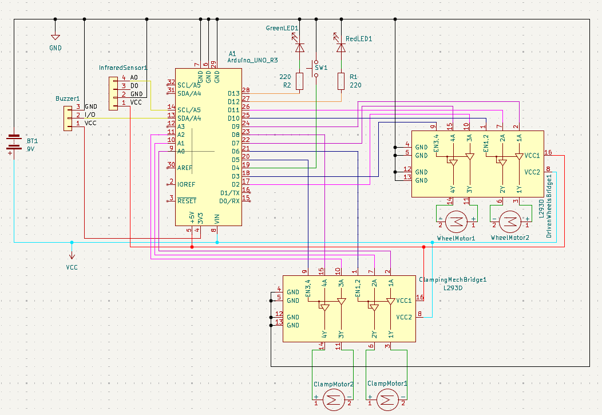
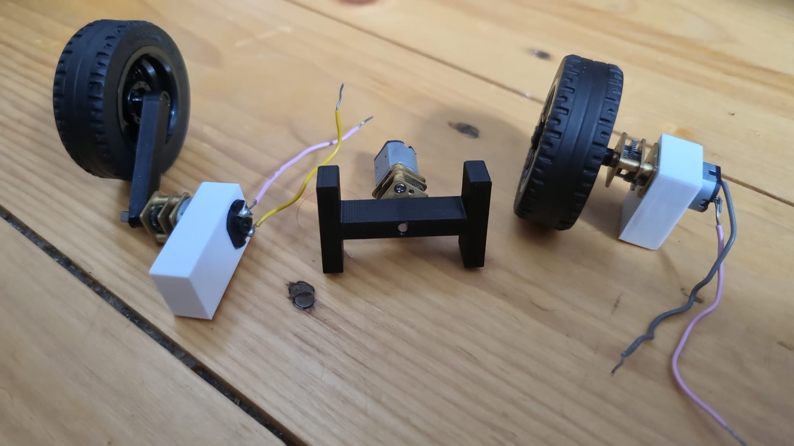

IMechE Design Challenge
The challenge

As part of the Advanced Category for the IMechE Design Challenge, we were tasked with design, manufacturing, and testing an external pipe-climbing device that could climb up a vertical pipe while lifting an increasing load. The project had strict rules: the top of the device had to have specific dimensions, operate on a restricted budget of £90, certain components were required to be used for specific applications, and a poster and a presentation had to be submitted the week before the competition.
My role and technical challenges
The main challenge for our team was implementing the competition guidelines, mainly the budget, and deciding which components to use given this constraint. The design and the work to buid the robot from a concept or simulation to a working physical device also supposed a major challenge. I was responsible for the electronics, programming and system optimization, therefore my personal was to design and build the core control systems while ensuring they were properly connected and communicating with the mechanical components.
There were specific tasks I had to tackle to make the device work properly:
- I was responsible for designing a clamping mechanism and chain deployer that would have a solid grip on the pipe, as well as 3D printing custom parts to attach the motors to the drive wheels.
- I needed to organize the electronics and wiring, connect the components (sensors, motors and additional components) and ensure the circuit was safe and functional.
- I had to write the arduino code and configure the microcontroller pins so that the sensors and motors worked properly without interference.
- Finally, I was in charge of testing the device to catch issues that could happen during runtime, and solve them by changing the code or hardware accordingly.

The solution
To overcome the different challenges that came with my responsibilities, I decided to use a combination of mechanical design solutions and custom software development to ensure the device worked as intended.
- For the mechanical aspects, I designed the robot's clamping mechanism to keep a secure grip on the pipe, using motors attached to a custom built arm that would attach to the wheels and close until it had exerted enough pressure on the pipe to avoid slippage, give the calculated force needed.
- I mapped out and wired the whole circuit and tested the distribution of power to each component, ensuring that it would work properly. To save space and fit within the size of the robot, and to reduce the weight, I designed a custom PCB, ensuring the circuit was safe and that it would handle enough current without overheating.
- I wrote the software using the Arduino IDE. I selected the best pins to connect the sensors, motors and components and coded how they would interact, using calculations for ensuring a smooth run given the uneven weight distribution over time due to the chain.
- During the testing phase, I printed the values picked up by the sensors and tested the grip of the wheels, adjusting calculations and changing the custom part until the device ran smoothly.

Outcome
As the project gets to the final month before the competition, the device is being completed according to plan:
- The core system is fully functional. The motors and the sensors communicate effectively and the power distribution is stable.
- The code calculations are functioning as expected and there are no major issues.
- The total cost for the project is under the given budget.
- The current body matches our CAD models and simulations, complying with the dimensional requirements.
For the next steps, the robot is projected to be fully assembled next week after finishing the last round of individual component testing, and the full assembly testing will begin next week, with a few weeks left for testing and refinement before the competition.

← Back to Portfolio